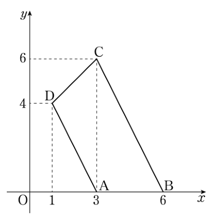

1. 2018년 3월 가형 6번 · 3점 · 고1 범위 · 직선의 방정식 · G2H-05b#7
원본 (내부용)두 직선 $x+y+2=0$, $(a+2)x-3y+1=0$이 서로 수직일 때, 상수 $a$의 값은? [3점]
① $\frac{1}{2}$② $1$③ $\frac{3}{2}$④ $2$⑤ $\frac{5}{2}$
원본 정답 ②
원본 풀이 (내부용)[출제의도] 두 직선의 수직 조건을 이용하여 상수의 값을 구한다.
직선 \(x+y+2=0\)의 기울기는 \(-1\)이고, 직선 \((a+2)x-3y+1=0\)의 기울기는 \(\frac{a+2}{3}\)이다. 두 직선이 서로 수직이므로 두 직선의 기울기의 곱은 \(-1\)이다.
\(
(-1)\times\frac{a+2}{3}=-1
\)
따라서 \(a=1\).
생성기 숫자판 1/6 · G2H-05b#7두 직선 $x+y+2=0$, $\left(a-2\right)x-2y+1=0$이 서로 수직일 때, 상수 $a$의 값으로 옳은 것을 고르세요.
① $3$② $4$③ $5$④ $6$⑤ $7$
정답② $4$ 두 직선이 서로 수직이려면 $1\times\left(a-2\right)+1\times \left(-2\right)=0$ 따라서 $a=4$
2. 2018년 3월 가형 19번 · 4점 · 고1 범위 · 직선의 방정식 · 4점 쌍둥이
원본 (내부용)좌표평면 위의 네 점 $\mathrm{A}(3,0)$, $\mathrm{B}(6,0)$, $\mathrm{C}(3,6)$, $\mathrm{D}(1,4)$를 꼭짓점으로 하는 사각형 $\mathrm{ABCD}$에서 선분 $\mathrm{AD}$를 $1:3$으로 내분하는 점을 지나는 직선 $l$이 사각형 $\mathrm{ABCD}$의 넓이를 이등분한다. 직선 $l$이 선분 $\mathrm{BC}$와 만나는 점의 좌표가 $(a,b)$일 때, $a+b$의 값은? [4점]

① $\frac{13}{2}$② $7$③ $\frac{15}{2}$④ $8$⑤ $\frac{17}{2}$
원본 정답 ④
원본 풀이 (내부용)[출제의도] 선분의 내분점과 직선의 방정식의 성질을 활용하여 점의 좌표를 구한다.
직선 \(AD\)의 기울기는
\(
\frac{4-0}{1-3}=-2
\)
이고, 직선 \(BC\)의 기울기는
\(
\frac{6-0}{3-6}=-2
\)
이므로 두 직선 \(AD,\ BC\)는 평행이고 사각형 \(ABCD\)는 사다리꼴이다.
두 밑변의 길이를 각각 \(a,b\), 높이를 \(h\)인 사다리꼴의 넓이를 \(S\)라 하면
\(
S=\frac12(a+b)h.
\)
직선 \(\ell\)이 사다리꼴 \(ABCD\)의 넓이를 이등분하려면 나누어진 두 사다리꼴의 두 밑변 길이의 합이 서로 같아야 한다.
선분 \(AD\)를 \(1:3\)으로 내분하는 점을 \(E\)라 하고, 점 \(E\)를 지나는 직선 \(\ell\)이 사다리꼴 \(ABCD\)의 넓이를 이등분할 때, 선분 \(BC\)와 만나는 점 \(F\)에 대하여 선분 \(BC\)를 \(m:n\)으로 내분한다고 하자.
\(
AD=2\sqrt5,\qquad BC=3\sqrt5
\)
이고 \(AE+BF=DE+CF\)이므로
\(
\frac14\times2\sqrt5+\frac{m}{m+n}\times3\sqrt5
=\frac34\times2\sqrt5+\frac{n}{m+n}\times3\sqrt5.
\)
\(
\frac12+\frac{3m}{m+n}=\frac32+\frac{3n}{m+n}
\)
에서
\(
\frac{3(m-n)}{m+n}=1,\quad 3m-3n=m+n,\quad 2m=4n,\quad m=2n.
\)
따라서 \(m:n=2:1\)이므로
\(
F\left(\frac{2\times3+1\times6}{3},\frac{2\times6+1\times0}{3}\right)=F(4,4).
\)
따라서 \(a=4,\ b=4\)이므로
\(
a+b=8.
\)
---
## 답안 및 해설
쌍둥이 1/6 · 4점 쌍둥이좌표평면 위의 네 점 $\mathrm{A}\left(4,\ 0\right)$, $\mathrm{B}\left(8,\ 0\right)$, $\mathrm{C}\left(4,\ 8\right)$, $\mathrm{D}\left(1,\ 6\right)$를 꼭짓점으로 하는 사각형 $\mathrm{ABCD}$가 있습니다. 선분 $\mathrm{AD}$를 $1:3$으로 내분하는 점을 지나는 직선 $l$이 사각형 $\mathrm{ABCD}$의 넓이를 이등분합니다. 직선 $l$이 선분 $\mathrm{BC}$와 만나는 점의 좌표를 $(a,\ b)$라 할 때, $a+b$의 값으로 옳은 것을 고르세요.
① $\frac{43}{4}$② $11$③ $\frac{45}{4}$④ $\frac{23}{2}$⑤ $\frac{47}{4}$
정답① $\frac{43}{4}$ 선분 $\mathrm{AD}$를 $1:3$으로 내분하는 점은 $\mathrm{P}\left(\frac{13}{4},\ \frac{3}{2}\right)$입니다 사각형 $\mathrm{ABCD}$의 넓이는 $28$이므로 사각형 $\mathrm{ABQP}$의 넓이가 $14$가 되어야 합니다 점 $\mathrm{Q}$를 선분 $\mathrm{BC}$ 위에 두고 넓이를 계산하면 $\mathrm{Q}\left(\frac{21}{4},\ \frac{11}{2}\right)$ 따라서 $a+b=\frac{43}{4}$
쌍둥이 2/6 · 4점 쌍둥이좌표평면 위의 네 점 $\mathrm{A}\left(4,\ 0\right)$, $\mathrm{B}\left(8,\ 0\right)$, $\mathrm{C}\left(5,\ 6\right)$, $\mathrm{D}\left(2,\ 4\right)$를 꼭짓점으로 하는 사각형 $\mathrm{ABCD}$가 있습니다. 선분 $\mathrm{AD}$를 $3:1$로 내분하는 점을 지나는 직선 $l$이 사각형 $\mathrm{ABCD}$의 넓이를 이등분합니다. 직선 $l$이 선분 $\mathrm{BC}$와 만나는 점의 좌표를 $(a,\ b)$라 할 때, $a+b$의 값으로 옳은 것을 고르세요.
① $5$② $6$③ $7$④ $8$⑤ $9$
정답⑤ $9$ 선분 $\mathrm{AD}$를 $3:1$로 내분하는 점은 $\mathrm{P}\left(\frac{5}{2},\ 3\right)$입니다 사각형 $\mathrm{ABCD}$의 넓이는 $20$이므로 사각형 $\mathrm{ABQP}$의 넓이가 $10$이 되어야 합니다 점 $\mathrm{Q}$를 선분 $\mathrm{BC}$ 위에 두고 넓이를 계산하면 $\mathrm{Q}\left(7,\ 2\right)$ 따라서 $a+b=9$
쌍둥이 3/6 · 4점 쌍둥이좌표평면 위의 네 점 $\mathrm{A}\left(5,\ 0\right)$, $\mathrm{B}\left(10,\ 0\right)$, $\mathrm{C}\left(6,\ 8\right)$, $\mathrm{D}\left(2,\ 6\right)$를 꼭짓점으로 하는 사각형 $\mathrm{ABCD}$가 있습니다. 선분 $\mathrm{AD}$를 $1:2$로 내분하는 점을 지나는 직선 $l$이 사각형 $\mathrm{ABCD}$의 넓이를 이등분합니다. 직선 $l$이 선분 $\mathrm{BC}$와 만나는 점의 좌표를 $(a,\ b)$라 할 때, $a+b$의 값으로 옳은 것을 고르세요.
① $11$② $\frac{23}{2}$③ $12$④ $\frac{25}{2}$⑤ $13$
정답④ $\frac{25}{2}$ 선분 $\mathrm{AD}$를 $1:2$로 내분하는 점은 $\mathrm{P}\left(4,\ 2\right)$입니다 사각형 $\mathrm{ABCD}$의 넓이는 $35$이므로 사각형 $\mathrm{ABQP}$의 넓이가 $\frac{35}{2}$가 되어야 합니다 점 $\mathrm{Q}$를 선분 $\mathrm{BC}$ 위에 두고 넓이를 계산하면 $\mathrm{Q}\left(\frac{15}{2},\ 5\right)$ 따라서 $a+b=\frac{25}{2}$
쌍둥이 4/6 · 4점 쌍둥이좌표평면 위의 네 점 $\mathrm{A}\left(4,\ 0\right)$, $\mathrm{B}\left(9,\ 0\right)$, $\mathrm{C}\left(5,\ 8\right)$, $\mathrm{D}\left(1,\ 6\right)$를 꼭짓점으로 하는 사각형 $\mathrm{ABCD}$가 있습니다. 선분 $\mathrm{AD}$를 $1:3$으로 내분하는 점을 지나는 직선 $l$이 사각형 $\mathrm{ABCD}$의 넓이를 이등분합니다. 직선 $l$이 선분 $\mathrm{BC}$와 만나는 점의 좌표를 $(a,\ b)$라 할 때, $a+b$의 값으로 옳은 것을 고르세요.
① $\frac{45}{4}$② $\frac{23}{2}$③ $\frac{47}{4}$④ $12$⑤ $\frac{49}{4}$
정답③ $\frac{47}{4}$ 선분 $\mathrm{AD}$를 $1:3$으로 내분하는 점은 $\mathrm{P}\left(\frac{13}{4},\ \frac{3}{2}\right)$입니다 사각형 $\mathrm{ABCD}$의 넓이는 $35$이므로 사각형 $\mathrm{ABQP}$의 넓이가 $\frac{35}{2}$가 되어야 합니다 점 $\mathrm{Q}$를 선분 $\mathrm{BC}$ 위에 두고 넓이를 계산하면 $\mathrm{Q}\left(\frac{25}{4},\ \frac{11}{2}\right)$ 따라서 $a+b=\frac{47}{4}$
쌍둥이 5/6 · 4점 쌍둥이좌표평면 위의 네 점 $\mathrm{A}\left(5,\ 0\right)$, $\mathrm{B}\left(10,\ 0\right)$, $\mathrm{C}\left(6,\ 8\right)$, $\mathrm{D}\left(2,\ 6\right)$를 꼭짓점으로 하는 사각형 $\mathrm{ABCD}$가 있습니다. 선분 $\mathrm{AD}$를 $1:3$으로 내분하는 점을 지나는 직선 $l$이 사각형 $\mathrm{ABCD}$의 넓이를 이등분합니다. 직선 $l$이 선분 $\mathrm{BC}$와 만나는 점의 좌표를 $(a,\ b)$라 할 때, $a+b$의 값으로 옳은 것을 고르세요.
① $\frac{49}{4}$② $\frac{25}{2}$③ $\frac{51}{4}$④ $13$⑤ $\frac{53}{4}$
정답③ $\frac{51}{4}$ 선분 $\mathrm{AD}$를 $1:3$으로 내분하는 점은 $\mathrm{P}\left(\frac{17}{4},\ \frac{3}{2}\right)$입니다 사각형 $\mathrm{ABCD}$의 넓이는 $35$이므로 사각형 $\mathrm{ABQP}$의 넓이가 $\frac{35}{2}$가 되어야 합니다 점 $\mathrm{Q}$를 선분 $\mathrm{BC}$ 위에 두고 넓이를 계산하면 $\mathrm{Q}\left(\frac{29}{4},\ \frac{11}{2}\right)$ 따라서 $a+b=\frac{51}{4}$
쌍둥이 6/6 · 4점 쌍둥이좌표평면 위의 네 점 $\mathrm{A}\left(5,\ 0\right)$, $\mathrm{B}\left(8,\ 0\right)$, $\mathrm{C}\left(4,\ 8\right)$, $\mathrm{D}\left(2,\ 6\right)$를 꼭짓점으로 하는 사각형 $\mathrm{ABCD}$가 있습니다. 선분 $\mathrm{AD}$를 $1:2$로 내분하는 점을 지나는 직선 $l$이 사각형 $\mathrm{ABCD}$의 넓이를 이등분합니다. 직선 $l$이 선분 $\mathrm{BC}$와 만나는 점의 좌표를 $(a,\ b)$라 할 때, $a+b$의 값으로 옳은 것을 고르세요.
① $\frac{17}{2}$② $9$③ $\frac{19}{2}$④ $10$⑤ $\frac{21}{2}$
정답⑤ $\frac{21}{2}$ 선분 $\mathrm{AD}$를 $1:2$로 내분하는 점은 $\mathrm{P}\left(4,\ 2\right)$입니다 사각형 $\mathrm{ABCD}$의 넓이는 $21$이므로 사각형 $\mathrm{ABQP}$의 넓이가 $\frac{21}{2}$이 되어야 합니다 점 $\mathrm{Q}$를 선분 $\mathrm{BC}$ 위에 두고 넓이를 계산하면 $\mathrm{Q}\left(\frac{11}{2},\ 5\right)$ 따라서 $a+b=\frac{21}{2}$
3. 2019년 3월 가형 17번 · 4점 · 고1 범위 · 직선의 방정식 · 4점 쌍둥이
원본 (내부용)그림과 같이 좌표평면 위의 점 $\mathrm{A} ( 8,6 )$에서 $x$축에 내린 수선의 발을 $\mathrm{H}$라 하고, 선분 $\mathrm{OH}$ 위의 점 $\mathrm{B}$에서 선분 $\mathrm{OA}$에 내린 수선의 발을 $\mathrm{I}$라 하자. $\overline{\mathrm{BH}}=\overline{\mathrm{BI}}$일 때, 직선 $\mathrm{AB}$의 방정식은 $y=mx+n$이다. $m+n$의 값은? (단, $\mathrm{O}$는 원점이고, $m$, $n$은 상수이다.) [4점]
① $-10$② $-9$③ $-8$④ $-7$⑤ $-6$
원본 정답 ③
원본 풀이 (내부용)[출제의도] 점과 직선 사이의 거리를 이용하여 직선의 방정식을 구하는 문제를 해결한다.
점 \(A(8,6)\)이므로 두 점 \(O,\ A\)를 지나는 직선의 방정식은
\(
y=\frac34x,\quad 3x-4y=0
\)
점 \(B\)의 좌표를 \((a,0)\) \((0<a<8)\)이라 하면
\(
\overline{BI}
=\frac{|3\times a-4\times0|}{\sqrt{3^2+(-4)^2}}
=\frac{3a}{5}
\)
\(
\overline{BH}=8-a
\)
\(
\overline{BI}=\overline{BH}
\)
에서
\(
\frac{3a}{5}=8-a,\qquad a=5
\)
그러므로 점 \(B(5,0)\)이다.
두 점 \(A(8,6), B(5,0)\)을 지나는 직선의 방정식은
\(
y-0=\frac{6-0}{8-5}(x-5)
\)
\(
y=2x-10
\)
따라서 \(m=2,\ n=-10\)이므로
\(
m+n=2+(-10)=-8
\)
[다른 풀이 1]
점 \(A(8,6)\)이므로 \(\overline{AH}=6,\ \overline{OH}=8\). 직각삼각형 \(OAH\)에서
\(
\overline{OA}
=\sqrt{\overline{AH}^2+\overline{OH}^2}
=\sqrt{6^2+8^2}=10
\)
\(
\overline{BH}=\overline{BI}=x\text{라 하면}\quad \overline{OB}=8-x
\)
두 삼각형 \(OBI\)와 \(OAH\)가 서로 닮음이므로
\(
\overline{OB}:\overline{BI}=\overline{OA}:\overline{AH}
\)
\(
(8-x):x=10:6
\)
\(
10x=48-6x\text{에서 }x=3
\)
그러므로 점 \(B\)의 좌표는 \((5,0)\)이다.
두 점 \(A(8,6), B(5,0)\)을 지나는 직선의 방정식은
\(
y-0=\frac{6-0}{8-5}(x-5),\qquad y=2x-10
\)
따라서 \(m=2,\ n=-10\)이므로 \(m+n=2+(-10)=-8\).
[다른 풀이 2]
직선 \(y=mx+n\)과 \(y\)축의 교점을 \(C\)라 하면 두 직선 \(OC,\ AH\)가 서로 평행하므로
\(
\angle OCB=\angle HAB
\)
\(\overline{BI}=\overline{BH}\)이고 \(\overline{AB}\)는 공통이므로 두 직각삼각형 \(AIB,\ BHA\)가 서로 합동이다. 따라서
\(
\angle BAI=\angle BAH
\)
삼각형 \(AOC\)에서 \(\angle OAC=\angle OCA\)이므로
\(
\overline{OC}=\overline{OA}=\sqrt{8^2+6^2}=10
\)
따라서 점 \(C\)의 좌표는 \((0,-10)\)이고, 직선 \(AC\)의 기울기 \(m\)은
\(
m=\frac{6-(-10)}{8-0}=2
\)
\(y\)절편은 \(-10\)이므로 \(n=-10\). 따라서
\(
m+n=2+(-10)=-8
\)
쌍둥이 1/6 · 4점 쌍둥이좌표평면 위의 점 $\mathrm{A}(12,\ 9)$에서 $x$축에 내린 수선의 발을 $\mathrm{H}$라 하고, 선분 $\mathrm{OH}$ 위의 점 $\mathrm{B}$에서 선분 $\mathrm{OA}$에 내린 수선의 발을 $\mathrm{I}$라 합니다. $\overline{\mathrm{BH}}=\overline{\mathrm{BI}}$일 때, 직선 $\mathrm{AB}$의 방정식은 $y=mx+n$입니다. $m+n$의 값으로 옳은 것을 고르세요. (단, $\mathrm{O}$는 원점이고, $m$, $n$은 상수입니다.)
① $-13$② $-12$③ $-11$④ $-10$⑤ $-9$
정답① $-13$ $\overline{\mathrm{OA}}=15$이고 $\mathrm{B}(t,\ 0)$이라 하면 $\overline{\mathrm{BI}}=\frac{9}{15}t$, $\overline{\mathrm{BH}}=12-t$ $\frac{9}{15}t=12-t$에서 $t=\frac{15}{2}$ 직선 $\mathrm{AB}$의 기울기 $m=2$, $n=-15$ 따라서 $m+n=-13$
숫자: 원본 8 6 → 쌍둥이 12 9
쌍둥이 2/6 · 4점 쌍둥이좌표평면 위의 점 $\mathrm{A}(16,\ 12)$에서 $x$축에 내린 수선의 발을 $\mathrm{H}$라 하고, 선분 $\mathrm{OH}$ 위의 점 $\mathrm{B}$에서 선분 $\mathrm{OA}$에 내린 수선의 발을 $\mathrm{I}$라 합니다. $\overline{\mathrm{BH}}=\overline{\mathrm{BI}}$일 때, 직선 $\mathrm{AB}$의 방정식은 $y=mx+n$입니다. $m+n$의 값으로 옳은 것을 고르세요. (단, $\mathrm{O}$는 원점이고, $m$, $n$은 상수입니다.)
① $-22$② $-21$③ $-20$④ $-19$⑤ $-18$
정답⑤ $-18$ $\overline{\mathrm{OA}}=20$이고 $\mathrm{B}(t,\ 0)$이라 하면 $\overline{\mathrm{BI}}=\frac{12}{20}t$, $\overline{\mathrm{BH}}=16-t$ $\frac{12}{20}t=16-t$에서 $t=10$ 직선 $\mathrm{AB}$의 기울기 $m=2$, $n=-20$ 따라서 $m+n=-18$
숫자: 원본 8 6 → 쌍둥이 16 12
쌍둥이 3/6 · 4점 쌍둥이좌표평면 위의 점 $\mathrm{A}(20,\ 15)$에서 $x$축에 내린 수선의 발을 $\mathrm{H}$라 하고, 선분 $\mathrm{OH}$ 위의 점 $\mathrm{B}$에서 선분 $\mathrm{OA}$에 내린 수선의 발을 $\mathrm{I}$라 합니다. $\overline{\mathrm{BH}}=\overline{\mathrm{BI}}$일 때, 직선 $\mathrm{AB}$의 방정식은 $y=mx+n$입니다. $m+n$의 값으로 옳은 것을 고르세요. (단, $\mathrm{O}$는 원점이고, $m$, $n$은 상수입니다.)
① $-25$② $-24$③ $-23$④ $-22$⑤ $-21$
정답③ $-23$ $\overline{\mathrm{OA}}=25$이고 $\mathrm{B}(t,\ 0)$이라 하면 $\overline{\mathrm{BI}}=\frac{15}{25}t$, $\overline{\mathrm{BH}}=20-t$ $\frac{15}{25}t=20-t$에서 $t=\frac{25}{2}$ 직선 $\mathrm{AB}$의 기울기 $m=2$, $n=-25$ 따라서 $m+n=-23$
숫자: 원본 8 6 → 쌍둥이 20 15
쌍둥이 4/6 · 4점 쌍둥이좌표평면 위의 점 $\mathrm{A}(15,\ 8)$에서 $x$축에 내린 수선의 발을 $\mathrm{H}$라 하고, 선분 $\mathrm{OH}$ 위의 점 $\mathrm{B}$에서 선분 $\mathrm{OA}$에 내린 수선의 발을 $\mathrm{I}$라 합니다. $\overline{\mathrm{BH}}=\overline{\mathrm{BI}}$일 때, 직선 $\mathrm{AB}$의 방정식은 $y=mx+n$입니다. $m+n$의 값으로 옳은 것을 고르세요. (단, $\mathrm{O}$는 원점이고, $m$, $n$은 상수입니다.)
① $-16$② $-\frac{47}{3}$③ $-\frac{46}{3}$④ $-15$⑤ $-\frac{44}{3}$
정답③ $-\frac{46}{3}$ $\overline{\mathrm{OA}}=17$이고 $\mathrm{B}(t,\ 0)$이라 하면 $\overline{\mathrm{BI}}=\frac{8}{17}t$, $\overline{\mathrm{BH}}=15-t$ $\frac{8}{17}t=15-t$에서 $t=\frac{51}{5}$ 직선 $\mathrm{AB}$의 기울기 $m=\frac{5}{3}$, $n=-17$ 따라서 $m+n=-\frac{46}{3}$
숫자: 원본 8 6 → 쌍둥이 15 8 · 같은 수: 8
쌍둥이 5/6 · 4점 쌍둥이좌표평면 위의 점 $\mathrm{A}(4,\ 3)$에서 $x$축에 내린 수선의 발을 $\mathrm{H}$라 하고, 선분 $\mathrm{OH}$ 위의 점 $\mathrm{B}$에서 선분 $\mathrm{OA}$에 내린 수선의 발을 $\mathrm{I}$라 합니다. $\overline{\mathrm{BH}}=\overline{\mathrm{BI}}$일 때, 직선 $\mathrm{AB}$의 방정식은 $y=mx+n$입니다. $m+n$의 값으로 옳은 것을 고르세요. (단, $\mathrm{O}$는 원점이고, $m$, $n$은 상수입니다.)
① $-4$② $-3$③ $-2$④ $-1$⑤ $0$
정답② $-3$ $\overline{\mathrm{OA}}=5$이고 $\mathrm{B}(t,\ 0)$이라 하면 $\overline{\mathrm{BI}}=\frac{3}{5}t$, $\overline{\mathrm{BH}}=4-t$ $\frac{3}{5}t=4-t$에서 $t=\frac{5}{2}$ 직선 $\mathrm{AB}$의 기울기 $m=2$, $n=-5$ 따라서 $m+n=-3$
숫자: 원본 8 6 → 쌍둥이 4 3
쌍둥이 6/6 · 4점 쌍둥이좌표평면 위의 점 $\mathrm{A}(24,\ 18)$에서 $x$축에 내린 수선의 발을 $\mathrm{H}$라 하고, 선분 $\mathrm{OH}$ 위의 점 $\mathrm{B}$에서 선분 $\mathrm{OA}$에 내린 수선의 발을 $\mathrm{I}$라 합니다. $\overline{\mathrm{BH}}=\overline{\mathrm{BI}}$일 때, 직선 $\mathrm{AB}$의 방정식은 $y=mx+n$입니다. $m+n$의 값으로 옳은 것을 고르세요. (단, $\mathrm{O}$는 원점이고, $m$, $n$은 상수입니다.)
① $-31$② $-30$③ $-29$④ $-28$⑤ $-27$
정답④ $-28$ $\overline{\mathrm{OA}}=30$이고 $\mathrm{B}(t,\ 0)$이라 하면 $\overline{\mathrm{BI}}=\frac{18}{30}t$, $\overline{\mathrm{BH}}=24-t$ $\frac{18}{30}t=24-t$에서 $t=15$ 직선 $\mathrm{AB}$의 기울기 $m=2$, $n=-30$ 따라서 $m+n=-28$
숫자: 원본 8 6 → 쌍둥이 24 18
4. 2019년 3월 나형 3번 · 2점 · 고1 범위 · 직선의 방정식 · G2M8-06#5
원본 (내부용)좌표평면에서 직선 의 기울기는? [2점] 12
① $6$② $7$③ $8$④ $9$⑤ $10$
원본 정답 ①
원본 풀이 (내부용)[출제의도] 직선의 방정식을 이해한다.
직선 \(12x-2y+5=0\)에서
\(
y=6x+\frac52
\)
따라서 직선 \(12x-2y+5=0\)의 기울기는 \(6\)이다.
생성기 숫자판 1/6 · G2M8-06#5좌표평면에서 직선 $10x-2y+5=0$의 기울기로 옳은 것을 고르세요.
① $5$② $6$③ $7$④ $8$⑤ $9$
정답① $5$ $10x-2y+5=0$에서 $-2y=-10x-5$ $y=5x+\frac{5}{2}$ 따라서 기울기는 $5$
숫자: 원본 12 → 쌍둥이 10 2 5 0
생성기 숫자판 2/6 · G2M8-06#5좌표평면에서 직선 $6x+3y+2=0$의 기울기로 옳은 것을 고르세요.
① $-3$② $-2$③ $-1$④ $0$⑤ $1$
정답② $-2$ $6x+3y+2=0$에서 $3y=-6x-2$ $y=-2x-\frac{2}{3}$ 따라서 기울기는 $-2$
숫자: 원본 12 → 쌍둥이 6 3 2 0
생성기 숫자판 3/6 · G2M8-06#5좌표평면에서 직선 $24x+3y-8=0$의 기울기로 옳은 것을 고르세요.
① $-12$② $-11$③ $-10$④ $-9$⑤ $-8$
정답⑤ $-8$ $24x+3y-8=0$에서 $3y=-24x+8$ $y=-8x+\frac{8}{3}$ 따라서 기울기는 $-8$
숫자: 원본 12 → 쌍둥이 24 3 8 0
생성기 숫자판 4/6 · G2M8-06#5좌표평면에서 직선 $5x-y+4=0$의 기울기로 옳은 것을 고르세요.
① $4$② $5$③ $6$④ $7$⑤ $8$
정답② $5$ $5x-y+4=0$에서 $-y=-5x-4$ $y=5x+4$ 따라서 기울기는 $5$
숫자: 원본 12 → 쌍둥이 5 4 0
생성기 숫자판 5/6 · G2M8-06#5좌표평면에서 직선 $6x+2y+6=0$의 기울기로 옳은 것을 고르세요.
① $-7$② $-6$③ $-5$④ $-4$⑤ $-3$
정답⑤ $-3$ $6x+2y+6=0$에서 $2y=-6x-6$ $y=-3x-3$ 따라서 기울기는 $-3$
숫자: 원본 12 → 쌍둥이 6 2 6 0
생성기 숫자판 6/6 · G2M8-06#5좌표평면에서 직선 $2x-2y-6=0$의 기울기로 옳은 것을 고르세요.
① $-1$② $0$③ $1$④ $2$⑤ $3$
정답③ $1$ $2x-2y-6=0$에서 $-2y=-2x+6$ $y=x-3$ 따라서 기울기는 $1$
숫자: 원본 12 → 쌍둥이 2 2 6 0
5. 2019년 3월 나형 16번 · 4점 · 고1 범위 · 직선의 방정식 · 4점 쌍둥이
원본 (내부용)좌표평면에 두 점 $\mathrm{A}$$( -3,1 )$, $\mathrm{B}$$( 1,k )$가 있다. 점 $\mathrm{A}$를 $y$축에 대하여 대칭이동한 점을 $\mathrm{P}$라 하고, 점 $\mathrm{B}$를 $y$축의 방향으로 $-5$만큼 평행이동한 점을 $\mathrm{Q}$라 하자. 직선 $\mathrm{BP}$와 직선 $\mathrm{PQ}$가 서로 수직이 되도록 하는 모든 실수 $k$의 값의 곱은? [4점]
① $8$② $10$③ $12$④ $14$⑤ $16$
원본 정답 ②
원본 풀이 (내부용)[출제의도] 점의 이동 및 두 직선의 위치 관계와 관련된 문제를 해결한다.
점 \(P\)는 점 \(A(-3,1)\)을 \(y\)축에 대하여 대칭이동한 점이므로 그 좌표는 \((3,1)\)이다.
또, 점 \(Q\)는 점 \(B(1,k)\)를 \(y\)축의 방향으로 \(-5\)만큼 평행이동한 점이므로 그 좌표는 \((1,k-5)\)이다.
두 점 \(B(1,k),\ P(3,1)\)에 대하여 직선 \(BP\)의 기울기는
\(
\frac{1-k}{3-1}=-\frac{k-1}{2}
\)
두 점 \(P(3,1),\ Q(1,k-5)\)에 대하여 직선 \(PQ\)의 기울기는
\(
\frac{(k-5)-1}{1-3}=-\frac{k-6}{2}
\)
직선 \(BP\)와 직선 \(PQ\)가 서로 수직이므로
\(
\left(-\frac{k-1}{2}\right)\left(-\frac{k-6}{2}\right)=-1
\)
\(
(k-1)(k-6)=-4
\)
\(
k^2-7k+10=0
\)
\(
(k-2)(k-5)=0
\)
따라서 가능한 실수 \(k\)의 값의 곱은
\(
2\times5=10
\)
쌍둥이 1/5 · 4점 쌍둥이좌표평면에 두 점 $\mathrm{A}\left(-2,\ 3\right)$, $\mathrm{B}\left(3,\ k\right)$가 있습니다. 점 $\mathrm{A}$를 $y$축에 대하여 대칭이동한 점을 $\mathrm{P}$, 점 $\mathrm{B}$를 $y$축의 방향으로 $-7$만큼 평행이동한 점을 $\mathrm{Q}$라 합니다. 직선 $\mathrm{BP}$와 직선 $\mathrm{PQ}$가 서로 수직이 되도록 하는 모든 실수 $k$의 값의 곱의 값으로 옳은 것을 고르세요.
① $25$② $27$③ $29$④ $31$⑤ $33$
정답④ $31$ $\mathrm{P}\left(2,\ 3\right)$, $\mathrm{Q}\left(3,\ k-7\right)$이므로 직선 $\mathrm{BP}$의 기울기는 $\frac{k-3}{3-2}$, 직선 $\mathrm{PQ}$의 기울기는 $\frac{k-7-3}{3-2}$ 수직이므로 두 기울기의 곱이 $-1$: $(k-3)(k-10)=-1$ 정리하면 $k^{2}-13k+31=0$이고 판별식이 양수이므로 서로 다른 두 실근을 가집니다 근과 계수의 관계에서 모든 $k$의 값의 곱은 $31$
숫자: 원본 3 1 1 5 → 쌍둥이 2 3 3 7 · 같은 수: 3
쌍둥이 2/5 · 4점 쌍둥이좌표평면에 두 점 $\mathrm{A}\left(-4,\ 2\right)$, $\mathrm{B}\left(1,\ k\right)$가 있습니다. 점 $\mathrm{A}$를 $y$축에 대하여 대칭이동한 점을 $\mathrm{P}$, 점 $\mathrm{B}$를 $y$축의 방향으로 $-8$만큼 평행이동한 점을 $\mathrm{Q}$라 합니다. 직선 $\mathrm{BP}$와 직선 $\mathrm{PQ}$가 서로 수직이 되도록 하는 모든 실수 $k$의 값의 곱의 값으로 옳은 것을 고르세요.
① $21$② $23$③ $25$④ $27$⑤ $29$
정답⑤ $29$ $\mathrm{P}\left(4,\ 2\right)$, $\mathrm{Q}\left(1,\ k-8\right)$이므로 직선 $\mathrm{BP}$의 기울기는 $\frac{k-2}{1-4}$, 직선 $\mathrm{PQ}$의 기울기는 $\frac{k-8-2}{1-4}$ 수직이므로 두 기울기의 곱이 $-1$: $(k-2)(k-10)=-9$ 정리하면 $k^{2}-12k+29=0$이고 판별식이 양수이므로 서로 다른 두 실근을 가집니다 근과 계수의 관계에서 모든 $k$의 값의 곱은 $29$
숫자: 원본 3 1 1 5 → 쌍둥이 4 2 1 8 · 같은 수: 1
쌍둥이 3/5 · 4점 쌍둥이좌표평면에 두 점 $\mathrm{A}\left(5,\ -1\right)$, $\mathrm{B}\left(-2,\ k\right)$가 있습니다. 점 $\mathrm{A}$를 $y$축에 대하여 대칭이동한 점을 $\mathrm{P}$, 점 $\mathrm{B}$를 $y$축의 방향으로 $-7$만큼 평행이동한 점을 $\mathrm{Q}$라 합니다. 직선 $\mathrm{BP}$와 직선 $\mathrm{PQ}$가 서로 수직이 되도록 하는 모든 실수 $k$의 값의 곱의 값으로 옳은 것을 고르세요.
① $3$② $5$③ $7$④ $9$⑤ $11$
정답① $3$ $\mathrm{P}\left(-5,\ -1\right)$, $\mathrm{Q}\left(-2,\ k-7\right)$이므로 직선 $\mathrm{BP}$의 기울기는 $\frac{k-\left(-1\right)}{-2-\left(-5\right)}$, 직선 $\mathrm{PQ}$의 기울기는 $\frac{k-7-\left(-1\right)}{-2-\left(-5\right)}$ 수직이므로 두 기울기의 곱이 $-1$: $(k-\left(-1\right))(k-6)=-9$ 정리하면 $k^{2}-5k+3=0$이고 판별식이 양수이므로 서로 다른 두 실근을 가집니다 근과 계수의 관계에서 모든 $k$의 값의 곱은 $3$
숫자: 원본 3 1 1 5 → 쌍둥이 5 1 2 7 · 같은 수: 1 5
쌍둥이 4/5 · 4점 쌍둥이좌표평면의 두 점 $A(4,-2)$, $B(-3,k)$에 대하여 $A$를 $y$축에 대하여 대칭이동한 점을 $P$, $B$를 $y$축 방향으로 $-4$만큼 평행이동한 점을 $Q$라 합니다. 직선 $BP$와 직선 $PQ$가 서로 수직이 되도록 하는 모든 실수 $k$의 곱을 구하세요.
① $-5$② $-4$③ $-3$④ $-2$⑤ $-1$
정답③ $-3$ $P=(-4,-2)$, $Q=(-3,k-4)$입니다. 따라서 $\overrightarrow{BP}=(-1,-2-k)$, $\overrightarrow{PQ}=(1,k-2)$입니다. 두 직선이 수직이므로 내적이 0입니다. $-1+(-2-k)(k-2)=0$에서 $k^2=3$을 얻습니다. 두 실근은 $\sqrt3,-\sqrt3$이므로 곱은 $-3$입니다.
숫자: 원본 3 1 1 5 → 쌍둥이 4 2 3 4 · 같은 수: 3
쌍둥이 5/5 · 4점 쌍둥이좌표평면의 두 점 $A(-1,4)$, $B(2,k)$에 대하여 $A$를 $y$축에 대하여 대칭이동한 점을 $P$, $B$를 $y$축 방향으로 $-3$만큼 평행이동한 점을 $Q$라 합니다. 직선 $BP$와 직선 $PQ$가 서로 수직이 되도록 하는 모든 실수 $k$의 곱을 구하세요.
① $25$② $27$③ $29$④ $31$⑤ $33$
정답③ $29$ $P=(1,4)$, $Q=(2,k-3)$이므로 $\overrightarrow{BP}=(-1,4-k)$, $\overrightarrow{PQ}=(1,k-7)$입니다. 수직 조건은 $-1+(4-k)(k-7)=0$입니다. 정리하면 $k^2-11k+29=0$입니다. 이 방정식의 판별식은 5로 양수이고 근의 곱은 29입니다.
숫자: 원본 3 1 1 5 → 쌍둥이 1 4 2 3 · 같은 수: 1 3
6. 2020년 3월 4번 · 3점 · 고1 범위 · 직선의 방정식 · G2H-05#1
원본 (내부용)두 직선 $y=-2x+3$, $y=ax+1$이 서로 수직일 때, 상수 $a$의 값은? [3점]
① $- \frac{1}{2}$② $- \frac{1}{3}$③ $\frac{1}{3}$④ $\frac{1}{2}$⑤ $\frac{2}{3}$
원본 정답 ④
원본 풀이 (내부용)[출제의도] 두 직선의 수직 조건을 이해하여 직선의 기울기를 구한다.
직선 \(y=-2x+3\)의 기울기는 \(-2\)이고 직선 \(y=ax+1\)의 기울기는 \(a\)이다. 두 직선이 서로 수직이면 두 직선의 기울기의 곱은 \(-1\)이어야 한다.
\(
(-2)\times a=-1
\)
따라서
\(
a=\frac12
\)
생성기 숫자판 1/6 · G2H-05#1두 직선 $y=1/2x+5$, $y=ax+1$이 서로 수직일 때, 상수 $a$의 값으로 옳은 것을 고르세요.
① $-4$② $-3$③ $-2$④ $-\frac{1}{2}$⑤ $2$
정답③ $-2$ 두 직선이 서로 수직이려면 기울기의 곱이 $-1$이어야 하므로 $1/2a=-1$ 따라서 $a=-2$
숫자: 원본 2 3 1 → 쌍둥이 1 2 5 1 · 같은 수: 1 2
생성기 숫자판 2/6 · G2H-05#1두 직선 $y=-4x+3$, $y=ax+1$이 서로 수직일 때, 상수 $a$의 값으로 옳은 것을 고르세요.
① $-\frac{1}{4}$② $\frac{1}{4}$③ $\frac{1}{2}$④ $\frac{5}{4}$⑤ $4$
정답② $\frac{1}{4}$ 두 직선이 서로 수직이려면 기울기의 곱이 $-1$이어야 하므로 $-4a=-1$ 따라서 $a=\frac{1}{4}$
숫자: 원본 2 3 1 → 쌍둥이 4 3 1 · 같은 수: 1 3
생성기 숫자판 3/6 · G2H-05#1두 직선 $y=1/2x-3$, $y=ax+1$이 서로 수직일 때, 상수 $a$의 값으로 옳은 것을 고르세요.
① $-5$② $-4$③ $-3$④ $-2$⑤ $2$
정답④ $-2$ 두 직선이 서로 수직이려면 기울기의 곱이 $-1$이어야 하므로 $1/2a=-1$ 따라서 $a=-2$
숫자: 원본 2 3 1 → 쌍둥이 1 2 3 1 · 같은 수: 1 2 3
생성기 숫자판 4/6 · G2H-05#1두 직선 $y=-3x+2$, $y=ax+1$이 서로 수직일 때, 상수 $a$의 값으로 옳은 것을 고르세요.
① $-\frac{1}{3}$② $\frac{1}{3}$③ $\frac{2}{3}$④ $\frac{4}{3}$⑤ $3$
정답② $\frac{1}{3}$ 두 직선이 서로 수직이려면 기울기의 곱이 $-1$이어야 하므로 $-3a=-1$ 따라서 $a=\frac{1}{3}$
숫자: 원본 2 3 1 → 쌍둥이 3 2 1 · 같은 수: 1 2 3
생성기 숫자판 5/6 · G2H-05#1두 직선 $y=1/2x+4$, $y=ax+1$이 서로 수직일 때, 상수 $a$의 값으로 옳은 것을 고르세요.
① $-2$② $-1$③ $-\frac{1}{2}$④ $\frac{1}{2}$⑤ $2$
정답① $-2$ 두 직선이 서로 수직이려면 기울기의 곱이 $-1$이어야 하므로 $1/2a=-1$ 따라서 $a=-2$
숫자: 원본 2 3 1 → 쌍둥이 1 2 4 1 · 같은 수: 1 2
생성기 숫자판 6/6 · G2H-05#1두 직선 $y=-2x+4$, $y=ax+1$이 서로 수직일 때, 상수 $a$의 값으로 옳은 것을 고르세요.
① $-\frac{1}{2}$② $\frac{1}{2}$③ $1$④ $\frac{3}{2}$⑤ $2$
정답② $\frac{1}{2}$ 두 직선이 서로 수직이려면 기울기의 곱이 $-1$이어야 하므로 $-2a=-1$ 따라서 $a=\frac{1}{2}$
숫자: 원본 2 3 1 → 쌍둥이 2 4 1 · 같은 수: 1 2
7. 2020년 3월 18번 · 4점 · 고1 범위 · 직선의 방정식 · 4점 쌍둥이
원본 (내부용)좌표평면의 제$1$사분면에 있는 두 점 $\mathrm{A}$, $\mathrm{B}$와 원점 $\mathrm{O}$에 대하여 삼각형 $\mathrm{OAB}$의 무게중심 $\mathrm{G}$의 좌표는 $( 8,4 )$이고, 점 $\mathrm{B}$와 직선 $\mathrm{OA}$ 사이의 거리는 $6 \sqrt{2}$이다. 다음은 직선 $\mathrm{OB}$의 기울기가 직선 $\mathrm{OA}$의 기울기보다 클 때, 직선 $\mathrm{OA}$의 기울기를 구하는 과정이다. 선분 $\mathrm{OA}$의 중점을 $\mathrm{M}$이라 하자. 점 $\mathrm{G}$가 삼각형 $\mathrm{OAB}$의 무게중심이므로 $\overline{BG} : \overline{GM}$$=2:1$ 이고, 점 $\mathrm{B}$와 직선 $\mathrm{OA}$ 사이의 거리가 $6 \sqrt{2}$이므로 점 $\mathrm{G}$와 직선 $\mathrm{OA}$ 사이의 거리는 ${\boxed{ (가) }}$이다. 직선 $\mathrm{OA}$의 기울기를 $m$이라 하면 점 $\mathrm{G}$와 직선 $\mathrm{OA}$ 사이의 거리는 $\frac{{\boxed{ (나) }} }{\sqrt{m^{2} + ( -1 )^{2}}}$ 이고 ${\boxed{ (가) }}$와 같다. 즉, ${\boxed{ (나) }}$$= {\boxed{ (가) }} \times \sqrt{m^{2} +1}$ 이다. 양변을 제곱하여 $m$의 값을 구하면 $m=\boxed{\phantom{0}}$ 또는 $m=\boxed{\phantom{0}}$ 이다. 이때 직선 $\mathrm{OG}$의 기울기가 $\frac{1}{2}$이므로 직선 $\mathrm{OA}$의 기울기는 ${\boxed{ (다) }}$이다. 위의 (가), (다)에 알맞은 수를 각각 $p$, $q$라 하고, (나)에 알맞은 식을 $f(m)$이라 할 때, $\frac{f(q)}{p^{2}}$의 값은? [4점]
① $\frac{2}{7}$② $\frac{5}{14}$③ $\frac{3}{7}$④ $\frac{1}{2}$⑤ $\frac{4}{7}$
원본 정답 ②
원본 풀이 (내부용)[출제의도] 점과 직선 사이의 거리를 이용하여 직선의 기울기를 추론한다.
선분 \(OA\)의 중점을 \(M\), 두 점 \(B,G\)에서 직선 \(OA\)에 내린 수선의 발을 각각 \(D,E\)라 하자.
그림에서 \(G(8,4)\)이고 점 \(G\)가 삼각형 \(OAB\)의 무게중심이므로
\(
BG:GM=2:1
\)
이고, 삼각형 \(MBD\)와 삼각형 \(MGE\)는 서로 닮음이므로
\(
BD:GE=3:1
\)
이다.
점 \(B\)와 직선 \(OA\) 사이의 거리 \(BD\)가 \(6\sqrt2\)이므로
\(
GE=\frac13\times6\sqrt2=2\sqrt2
\)
직선 \(OA\)의 기울기를 \(m\)이라 하면 직선 \(OA\)의 방정식은 \(y=mx\), 즉 \(mx-y=0\)이므로 점 \(G\)와 직선 \(OA\) 사이의 거리는
\(
\frac{|8m-4|}{\sqrt{m^2+(-1)^2}}
\)
이다.
그림: \(O\)를 원점으로 하는 좌표축 위에 삼각형 \(OAB\)가 있고, \(M\)은 \(OA\)의 중점이다. \(G(8,4)\)는 삼각형의 무게중심이며 \(D,E\)는 각각 \(B,G\)에서 \(OA\)에 내린 수선의 발이다. \(B,D\), \(G,E\)에는 직각 표시가 있다.
원본 PDF 8쪽
## 해설 (계속)
쌍둥이 1/5 · 4점 쌍둥이제1사분면의 두 점 $A,B$와 원점 $O$에 대하여 삼각형 $OAB$의 무게중심은 $G(4,3)$이다. 점 $B$와 직선 $OA$ 사이의 거리는 $3$이고 직선 $OB$의 기울기는 직선 $OA$보다 크다. 직선 $OA$의 기울기를 구하시오.
정답$(12-2\sqrt6)/15$ 무게중심 관계에서 $BG:GM=2:1$이므로 $B$와 $OA$ 사이 거리 3은 $G$와 $OA$ 사이 거리의 세 배이다. 따라서 $d(G,OA)=1$. 기울기를 $m$라 하면 $|4m-3|/\sqrt{m^2+1}=1$, 즉 $15m^2-24m+8=0$. 두 근은 $(12-2\sqrt6)/15$, $(12+2\sqrt6)/15$이다. $B=3G-A$이므로 $m<3/4$. 따라서 작은 근 $m=(12-2\sqrt6)/15$를 택한다.
쌍둥이 2/5 · 4점 쌍둥이좌표평면의 제$1$사분면에 있는 두 점 $A$, $B$와 원점 $O$에 대하여 삼각형 $OAB$의 무게중심 $G$의 좌표는 $(5,\ 3)$이고, 점 $B$와 직선 $OA$ 사이의 거리는 $3\sqrt{2}$입니다. 다음은 직선 $OB$의 기울기가 직선 $OA$의 기울기보다 클 때, 직선 $OA$의 기울기를 구하는 과정입니다. 선분 $OA$의 중점을 $M$이라 하면 점 $G$가 삼각형 $OAB$의 무게중심이므로 $\overline{BG}:\overline{GM}=2:1$이고, 점 $B$와 직선 $OA$ 사이의 거리가 $3\sqrt{2}$이므로 점 $G$와 직선 $OA$ 사이의 거리는 $\boxed{\text{(가)}}$입니다. 직선 $OA$의 기울기를 $m$이라 하면 점 $G$와 직선 $OA$ 사이의 거리는 $\frac{\boxed{\text{(나)}}}{\sqrt{m^{2}+(-1)^{2}}}$이고 $\boxed{\text{(가)}}$와 같습니다. 즉, $\boxed{\text{(나)}}=\boxed{\text{(가)}}\times\sqrt{m^{2}+1}$입니다. 양변을 제곱하여 $m$의 값을 구하면 $m=\boxed{\phantom{0}}$ 또는 $m=\boxed{\phantom{0}}$입니다. 이때 직선 $OG$의 기울기가 $\frac{3}{5}$이므로 직선 $OA$의 기울기는 $\boxed{\text{(다)}}$입니다. (가), (다)에 알맞은 수를 각각 $p$, $q$라 하고, (나)에 알맞은 식을 $f(m)$이라 할 때, $\frac{f(q)}{p^{2}}$의 값으로 옳은 것을 고르세요.
① $\frac{14}{23}$② $\frac{15}{23}$③ $\frac{16}{23}$④ $\frac{17}{23}$⑤ $\frac{18}{23}$
정답④ $\frac{17}{23}$ $\overline{BG}:\overline{GM}=2:1$이고 $M$은 직선 $OA$ 위에 있으므로 (가)$=\frac{1}{3}\times3\sqrt{2}=\sqrt{2}$ 직선 $OA$: $mx-y=0$이므로 점 $G(5,\ 3)$와의 거리는 $\frac{|5m-3|}{\sqrt{m^{2}+(-1)^{2}}}$, 즉 (나)$=|5m-3|$ $(5m-3)^{2}=2(m^{2}+1)$을 정리하면 $23m^{2}-30m+7=0$이므로 $m=\frac{7}{23}$ 또는 $m=1$ 직선 $OA$의 기울기는 직선 $OG$의 기울기 $\frac{3}{5}$보다 작아야 하므로 (다)$=\frac{7}{23}$ $\frac{f(q)}{p^{2}}=\frac{\left|5\times\frac{7}{23}-3\right|}{2}=\frac{17}{23}$
쌍둥이 3/5 · 4점 쌍둥이좌표평면의 제$1$사분면에 있는 두 점 $A$, $B$와 원점 $O$에 대하여 삼각형 $OAB$의 무게중심 $G$의 좌표는 $(8,\ 6)$이고, 점 $B$와 직선 $OA$ 사이의 거리는 $3\sqrt{10}$입니다. 다음은 직선 $OB$의 기울기가 직선 $OA$의 기울기보다 클 때, 직선 $OA$의 기울기를 구하는 과정입니다. 선분 $OA$의 중점을 $M$이라 하면 점 $G$가 삼각형 $OAB$의 무게중심이므로 $\overline{BG}:\overline{GM}=2:1$이고, 점 $B$와 직선 $OA$ 사이의 거리가 $3\sqrt{10}$이므로 점 $G$와 직선 $OA$ 사이의 거리는 $\boxed{\text{(가)}}$입니다. 직선 $OA$의 기울기를 $m$이라 하면 점 $G$와 직선 $OA$ 사이의 거리는 $\frac{\boxed{\text{(나)}}}{\sqrt{m^{2}+(-1)^{2}}}$이고 $\boxed{\text{(가)}}$와 같습니다. 즉, $\boxed{\text{(나)}}=\boxed{\text{(가)}}\times\sqrt{m^{2}+1}$입니다. 양변을 제곱하여 $m$의 값을 구하면 $m=\boxed{\phantom{0}}$ 또는 $m=\boxed{\phantom{0}}$입니다. 이때 직선 $OG$의 기울기가 $\frac{3}{4}$이므로 직선 $OA$의 기울기는 $\boxed{\text{(다)}}$입니다. (가), (다)에 알맞은 수를 각각 $p$, $q$라 하고, (나)에 알맞은 식을 $f(m)$이라 할 때, $\frac{f(q)}{p^{2}}$의 값으로 옳은 것을 고르세요.
① $\frac{1}{3}$② $\frac{2}{3}$③ $1$④ $\frac{4}{3}$⑤ $\frac{5}{3}$
정답① $\frac{1}{3}$ $\overline{BG}:\overline{GM}=2:1$이고 $M$은 직선 $OA$ 위에 있으므로 (가)$=\frac{1}{3}\times3\sqrt{10}=\sqrt{10}$ 직선 $OA$: $mx-y=0$이므로 점 $G(8,\ 6)$와의 거리는 $\frac{|8m-6|}{\sqrt{m^{2}+(-1)^{2}}}$, 즉 (나)$=|8m-6|$ $(8m-6)^{2}=10(m^{2}+1)$을 정리하면 $54m^{2}-96m+26=0$이므로 $m=\frac{1}{3}$ 또는 $m=\frac{13}{9}$ 직선 $OA$의 기울기는 직선 $OG$의 기울기 $\frac{3}{4}$보다 작아야 하므로 (다)$=\frac{1}{3}$ $\frac{f(q)}{p^{2}}=\frac{\left|8\times\frac{1}{3}-6\right|}{10}=\frac{1}{3}$
쌍둥이 4/5 · 4점 쌍둥이좌표평면의 제$1$사분면에 있는 두 점 $A$, $B$와 원점 $O$에 대하여 삼각형 $OAB$의 무게중심 $G$의 좌표는 $(9,\ 7)$이고, 점 $B$와 직선 $OA$ 사이의 거리는 $3\sqrt{13}$입니다. 다음은 직선 $OB$의 기울기가 직선 $OA$의 기울기보다 클 때, 직선 $OA$의 기울기를 구하는 과정입니다. 선분 $OA$의 중점을 $M$이라 하면 점 $G$가 삼각형 $OAB$의 무게중심이므로 $\overline{BG}:\overline{GM}=2:1$이고, 점 $B$와 직선 $OA$ 사이의 거리가 $3\sqrt{13}$이므로 점 $G$와 직선 $OA$ 사이의 거리는 $\boxed{\text{(가)}}$입니다. 직선 $OA$의 기울기를 $m$이라 하면 점 $G$와 직선 $OA$ 사이의 거리는 $\frac{\boxed{\text{(나)}}}{\sqrt{m^{2}+(-1)^{2}}}$이고 $\boxed{\text{(가)}}$와 같습니다. 즉, $\boxed{\text{(나)}}=\boxed{\text{(가)}}\times\sqrt{m^{2}+1}$입니다. 양변을 제곱하여 $m$의 값을 구하면 $m=\boxed{\phantom{0}}$ 또는 $m=\boxed{\phantom{0}}$입니다. 이때 직선 $OG$의 기울기가 $\frac{7}{9}$이므로 직선 $OA$의 기울기는 $\boxed{\text{(다)}}$입니다. (가), (다)에 알맞은 수를 각각 $p$, $q$라 하고, (나)에 알맞은 식을 $f(m)$이라 할 때, $\frac{f(q)}{p^{2}}$의 값으로 옳은 것을 고르세요.
① $\frac{5}{17}$② $\frac{6}{17}$③ $\frac{7}{17}$④ $\frac{8}{17}$⑤ $\frac{9}{17}$
정답① $\frac{5}{17}$ $\overline{BG}:\overline{GM}=2:1$이고 $M$은 직선 $OA$ 위에 있으므로 (가)$=\frac{1}{3}\times3\sqrt{13}=\sqrt{13}$ 직선 $OA$: $mx-y=0$이므로 점 $G(9,\ 7)$와의 거리는 $\frac{|9m-7|}{\sqrt{m^{2}+(-1)^{2}}}$, 즉 (나)$=|9m-7|$ $(9m-7)^{2}=13(m^{2}+1)$을 정리하면 $68m^{2}-126m+36=0$이므로 $m=\frac{6}{17}$ 또는 $m=\frac{3}{2}$ 직선 $OA$의 기울기는 직선 $OG$의 기울기 $\frac{7}{9}$보다 작아야 하므로 (다)$=\frac{6}{17}$ $\frac{f(q)}{p^{2}}=\frac{\left|9\times\frac{6}{17}-7\right|}{13}=\frac{5}{17}$
쌍둥이 5/5 · 4점 쌍둥이제1사분면의 두 점 $A,B$와 원점 $O$에 대하여 삼각형 $OAB$의 무게중심은 $G(3,2)$이다. 점 $B$와 직선 $OA$ 사이의 거리는 $3$이고 직선 $OB$의 기울기는 직선 $OA$보다 크다. 직선 $OA$의 기울기를 구하시오.
정답$(3-\sqrt3)/4$ 무게중심 관계에서 $BG:GM=2:1$이므로 $B$와 $OA$ 사이 거리 3은 $G$와 $OA$ 사이 거리의 세 배이다. 따라서 $d(G,OA)=1$. 기울기를 $m$라 하면 $|3m-2|/\sqrt{m^2+1}=1$, 즉 $8m^2-12m+3=0$. 두 근은 $(3-\sqrt3)/4$, $(3+\sqrt3)/4$이다. $B=3G-A$이므로 $m<2/3$. 따라서 작은 근 $m=(3-\sqrt3)/4$를 택한다.
원본 (내부용)점 \((2,3)\)을 지나고 직선 \(3x+2y-5=0\)과 평행한 직선의 \(y\)절편은? [3점]
① 6② 7③ 8④ 9⑤ 10
원본 정답 ①
원본 풀이 (내부용)[출제의도] 두 직선의 평행 조건을 이해하여 직선의 \(y\)절편을 구한다.
직선 \(3x+2y-5=0\), 즉 \(y=-\frac32x+\frac52\)의 기울기가 \(-\frac32\)이므로 이 직선과 평행한 직선의 기울기는 \(-\frac32\)이다. 기울기가 \(-\frac32\)이고 점 \((2,3)\)을 지나는 직선의 방정식은
\(
y=-\frac32(x-2)+3,\quad\text{즉}\quad y=-\frac32x+6
\)
이므로, 구하는 \(y\)절편은 6이다.
**[다른 풀이]**
직선 \(3x+2y-5=0\)과 평행한 직선의 방정식은 \(3x+2y=a\) \((a\text{는 상수})\) 꼴로 쓸 수 있다. 이 직선이 점 \((2,3)\)을 지나므로
\(
3\times2+2\times3=a,\quad a=12
\)
따라서 직선 \(3x+2y-12=0\)의 \(y\)절편은 6이다.
생성기 숫자판 1/6 · G2H-05#2점 $\left(-2,\ 4\right)$를 지나고 직선 $3x+2y+1=0$과 평행한 직선의 $y$절편으로 옳은 것을 고르세요.
① $-2$② $-1$③ $0$④ $1$⑤ $2$
정답④ $1$ 직선 $3x+2y+1=0$의 기울기는 $-\frac{3}{2}$ 구하는 직선은 $y-4=-\frac{3}{2}\left(x-\left(-2\right)\right)$ $x=0$을 대입하면 $y=1$이므로 $y$절편은 $1$
생성기 숫자판 6/6 · G2H-05#2점 $\left(2,\ 0\right)$을 지나고 직선 $4x+2y-1=0$과 평행한 직선의 $y$절편으로 옳은 것을 고르세요.
① $4$② $5$③ $6$④ $7$⑤ $8$
정답① $4$ 직선 $4x+2y-1=0$의 기울기는 $-2$ 구하는 직선은 $y-0=-2\left(x-2\right)$ $x=0$을 대입하면 $y=4$이므로 $y$절편은 $4$
숫자: 원본 2 3 3 2 5 0 → 쌍둥이 2 0 4 2 1 0 · 같은 수: 0 2
9. 2022년 3월 20번 · 4점 · 고1 범위 · 직선의 방정식 · 4점 쌍둥이
원본 (내부용)두 직선 \(l_1:2x+y+2=0,\ l_2:x-2y-4=0\)의 교점을 \(A\), 두 직선 \(l_1,\ l_2\)가 \(x\)축과 만나는 점을 각각 \(B,\ C\)라 하자. 제1사분면에 있는 점 \(P\)와 삼각형 \(ABC\)의 외접원 위의 점 \(Q\)가 다음 조건을 만족시킨다. (가) 점 \(Q\)는 삼각형 \(PBC\)의 무게중심이다. (나) 삼각형 \(PBC\)의 넓이는 삼각형 \(ABC\)의 넓이의 3배이다. <보기>에서 옳은 것만을 있는 대로 고른 것은? [4점] ㄱ. 두 직선 \(l_1,\ l_2\)는 서로 수직이다. ㄴ. 점 \(Q\)의 \(y\)좌표는 2이다. ㄷ. 점 \(P\)의 \(x\)좌표와 \(y\)좌표의 합은 10이다.
① ㄱ② ㄴ③ ㄱ, ㄴ④ ㄱ, ㄷ⑤ ㄱ, ㄴ, ㄷ
원본 정답 ③
원본 풀이 (내부용)[출제의도] 두 직선의 위치 관계를 이용하여 조건을 만족시키는 점을 구하는 문제를 해결한다.
두 식 \(2x+y+2=0,\ x-2y-4=0\)을 연립하면
\(
x=0,\quad y=-2
\)
이므로 두 직선 \(l_1,l_2\)의 교점 \(A\)는 \(A(0,-2)\).
직선 \(l_1\)이 \(x\)축과 만나는 점 \(B\)는
\(
2x+0+2=0,\quad x=-1
\)
에서 \(B(-1,0)\).
직선 \(l_2\)가 \(x\)축과 만나는 점 \(C\)는
\(
x-0-4=0,\quad x=4
\)
에서 \(C(4,0)\).
ㄱ. 두 직선 \(l_1,l_2\)의 기울기는 각각 \(-2,\ \frac12\)이다. 두 직선의 기울기의 곱이 \(-1\)이므로 두 직선 \(l_1,l_2\)는 서로 수직이다. (참)
ㄴ. 점 \(Q\)가 삼각형 \(PBC\)의 무게중심이므로 삼각형 \(PBC\)의 넓이는 삼각형 \(QBC\)의 넓이의 3배이다.
조건 (나)에서 삼각형 \(PBC\)의 넓이는 삼각형 \(ABC\)의 넓이의 3배이므로 두 삼각형 \(QBC,\ ABC\)의 넓이는 서로 같다.
두 삼각형 \(QBC,\ ABC\)에서 선분 \(BC\)가 공통이므로 점 \(Q\)와 직선 \(BC\) 사이의 거리는 점 \(A\)와 직선 \(BC\) 사이의 거리인 2이다. 즉, 점 \(Q\)의 \(y\)좌표는 2 또는 \(-2\)이다.
제1사분면에 있는 점 \(P\)에 대하여 세 점 \(P,B,C\)의 \(x\)좌표의 합과 \(y\)좌표의 합은 모두 양수이고 점 \(Q\)도 제1사분면에 있는 점이다. 따라서 점 \(Q\)의 \(y\)좌표는 2이다. (참)
ㄷ. ㄱ에서 두 직선 \(l_1,l_2\)가 서로 수직이므로 삼각형 \(ABC\)의 외접원의 지름은 선분 \(BC\)이다. 원의 중심은 선분 \(BC\)의 중점 \(M\)이므로 그 좌표는
\(
\left(\frac{-1+4}{2},\frac{0+0}{2}\right)
=\left(\frac32,0\right)
\)
---
## 답안 및 해설
쌍둥이 1/5 · 4점 쌍둥이두 직선 $l_{1}:3 x + y + 3=0$, $l_{2}:x - 3 y - 3=0$의 교점을 $A$, 두 직선 $l_{1}$, $l_{2}$가 $x$축과 만나는 점을 각각 $B$, $C$라 합니다. 제$1$사분면에 있는 점 $P$와 삼각형 $ABC$의 외접원 위의 점 $Q$가 다음 조건을 만족시킵니다. (가) 점 $Q$는 삼각형 $PBC$의 무게중심입니다. (나) 삼각형 $PBC$의 넓이는 삼각형 $ABC$의 넓이의 $3$배입니다. <보기>에서 옳은 것만을 있는 대로 고른 것을 고르세요. <보기> ㄱ. 두 직선 $l_{1}$, $l_{2}$는 서로 수직입니다. ㄴ. 점 $Q$의 $y$좌표는 $1$입니다. ㄷ. 점 $P$의 $x$좌표와 $y$좌표의 합은 $6$입니다.
① ㄱ② ㄴ③ ㄱ, ㄴ④ ㄱ, ㄷ⑤ ㄱ, ㄴ, ㄷ
정답① ㄱ $A(-\frac{3}{5},\ -\frac{6}{5})$, $B(-1,\ 0)$, $C(3,\ 0)$입니다. ㄱ. 두 직선의 법선벡터의 내적은 $3\times1+1\times\left(-3\right)=0$이므로 수직이고 옳습니다. 외접원은 중심 $\left(1,\ 0\right)$, 반지름의 제곱 $4$입니다. (나)에서 밑변 $BC$가 같으므로 $P$의 $y$좌표는 $3\times\frac{6}{5}=\frac{18}{5}$이고, 무게중심 $Q$의 $y$좌표는 $\frac{6}{5}$입니다. 따라서 ㄴ은 거짓입니다. $Q$가 외접원 위에 있고 $P$가 제$1$사분면에 있으려면 $Q$의 $x$좌표는 $\frac{13}{5}$, $P\left(\frac{29}{5},\ \frac{18}{5}\right)$이므로 합은 $\frac{47}{5}$, ㄷ은 거짓입니다. 따라서 옳은 것은 ㄱ
쌍둥이 2/5 · 4점 쌍둥이두 직선 $l_{1}:x + y + 2=0$, $l_{2}:x - y - 4=0$의 교점을 $A$, 두 직선 $l_{1}$, $l_{2}$가 $x$축과 만나는 점을 각각 $B$, $C$라 합니다. 제$1$사분면에 있는 점 $P$와 삼각형 $ABC$의 외접원 위의 점 $Q$가 다음 조건을 만족시킵니다. (가) 점 $Q$는 삼각형 $PBC$의 무게중심입니다. (나) 삼각형 $PBC$의 넓이는 삼각형 $ABC$의 넓이의 $3$배입니다. <보기>에서 옳은 것만을 있는 대로 고른 것을 고르세요. <보기> ㄱ. 두 직선 $l_{1}$, $l_{2}$는 서로 수직입니다. ㄴ. 점 $Q$의 $y$좌표는 $3$입니다. ㄷ. 점 $P$의 $x$좌표와 $y$좌표의 합은 $12$입니다.
① ㄱ② ㄴ③ ㄱ, ㄴ④ ㄱ, ㄷ⑤ ㄱ, ㄴ, ㄷ
정답③ ㄱ, ㄴ $A(1,\ -3)$, $B(-2,\ 0)$, $C(4,\ 0)$입니다. ㄱ. 두 직선의 법선벡터의 내적은 $1\times1+1\times\left(-1\right)=0$이므로 수직이고 옳습니다. 외접원은 중심 $\left(1,\ 0\right)$, 반지름의 제곱 $9$입니다. (나)에서 밑변 $BC$가 같으므로 $P$의 $y$좌표는 $3\times3=9$이고, 무게중심 $Q$의 $y$좌표는 $3$입니다. 따라서 ㄴ은 옳습니다. $Q$가 외접원 위에 있고 $P$가 제$1$사분면에 있으려면 $Q$의 $x$좌표는 $1$, $P\left(1,\ 9\right)$이므로 합은 $10$, ㄷ은 거짓입니다. 따라서 옳은 것은 ㄱ, ㄴ
쌍둥이 3/5 · 4점 쌍둥이두 직선 $l_{1}:4 x + 2 y + 4=0$, $l_{2}:x - 2 y - 6=0$의 교점을 $A$, 두 직선 $l_{1}$, $l_{2}$가 $x$축과 만나는 점을 각각 $B$, $C$라 합니다. 제$1$사분면에 있는 점 $P$와 삼각형 $ABC$의 외접원 위의 점 $Q$가 다음 조건을 만족시킵니다. (가) 점 $Q$는 삼각형 $PBC$의 무게중심입니다. (나) 삼각형 $PBC$의 넓이는 삼각형 $ABC$의 넓이의 $3$배입니다. <보기>에서 옳은 것만을 있는 대로 고른 것을 고르세요. <보기> ㄱ. 두 직선 $l_{1}$, $l_{2}$는 서로 수직입니다. ㄴ. 점 $Q$의 $y$좌표는 $2$입니다. ㄷ. 점 $P$의 $x$좌표와 $y$좌표의 합은 $13$입니다.
① ㄱ② ㄴ③ ㄱ, ㄴ④ ㄱ, ㄷ⑤ ㄱ, ㄴ, ㄷ
정답① ㄱ $A(\frac{2}{5},\ -\frac{14}{5})$, $B(-1,\ 0)$, $C(6,\ 0)$입니다. ㄱ. 두 직선의 법선벡터의 내적은 $4\times1+2\times\left(-2\right)=0$이므로 수직이고 옳습니다. 외접원은 중심 $\left(\frac{5}{2},\ 0\right)$, 반지름의 제곱 $\frac{49}{4}$입니다. (나)에서 밑변 $BC$가 같으므로 $P$의 $y$좌표는 $3\times\frac{14}{5}=\frac{42}{5}$이고, 무게중심 $Q$의 $y$좌표는 $\frac{14}{5}$입니다. 따라서 ㄴ은 거짓입니다. $Q$가 외접원 위에 있고 $P$가 제$1$사분면에 있으려면 $Q$의 $x$좌표는 $\frac{23}{5}$, $P\left(\frac{44}{5},\ \frac{42}{5}\right)$이므로 합은 $\frac{86}{5}$, ㄷ은 거짓입니다. 따라서 옳은 것은 ㄱ
쌍둥이 4/5 · 4점 쌍둥이두 직선 $l_1:3x+y+3=0$, $l_2:x-3y-3=0$의 교점은 $A$, 두 직선의 $x$축 교점은 각각 $B,C$이다. 제1사분면의 점 $P$와 삼각형 $ABC$의 외접원 위의 점 $Q$가 주어지며, $Q$는 삼각형 $PBC$의 무게중심이고 $[PBC]=2\,[ABC]$이다. 다음 보기에서 옳은 것만을 고르시오. ㄱ. $l_1\perp l_2$ ㄴ. $Q$의 $y$좌표는 $4/5$이다. ㄷ. $P$의 좌표의 합은 $(17+6\sqrt{21})/5$이다.
① ㄱ② ㄴ③ ㄷ④ ㄱ, ㄴ⑤ ㄱ, ㄴ, ㄷ
정답⑤ ㄱ, ㄴ, ㄷ 직선의 기울기는 각각 $-3$과 $1/3$이므로 ㄱ은 참이다. $B=(-1,0)$, $C=(3,0)$, $A=(-3/5,-6/5)$이며 외접원은 $x^2+y^2-2x-3=0$이다. $[ABC]=12/5$이고 $[PBC]=(2)(12/5)=2y_P$, 따라서 $y_P=6$. 무게중심에서 $Q_y=y_P/3=4/5$이므로 ㄴ은 참이다. 원 위에서 $Q_x^2-2Q_x+Q_y^2-3=0$이고 $Q_x=(x_P+2)/3$이다. 제1사분면 조건으로 양의 해를 택하면 $x_P+y_P=(17+6\sqrt{21})/5$이므로 ㄷ도 참이다.
쌍둥이 5/5 · 4점 쌍둥이두 직선 $l_1:3x+y+3=0$, $l_2:x-3y-3=0$의 교점은 $A$, 두 직선의 $x$축 교점은 각각 $B,C$이다. 제1사분면의 점 $P$와 삼각형 $ABC$의 외접원 위의 점 $Q$가 주어지며, $Q$는 삼각형 $PBC$의 무게중심이고 $[PBC]=5/2\,[ABC]$이다. 다음 보기에서 옳은 것만을 고르시오. ㄱ. $l_1\perp l_2$ ㄴ. $Q$의 $y$좌표는 $1$이다. ㄷ. $P$의 좌표의 합은 $4+3\sqrt3$이다.
① ㄱ② ㄴ③ ㄷ④ ㄱ, ㄴ⑤ ㄱ, ㄴ, ㄷ
정답⑤ ㄱ, ㄴ, ㄷ 직선의 기울기는 각각 $-3$과 $1/3$이므로 ㄱ은 참이다. $B=(-1,0)$, $C=(3,0)$, $A=(-3/5,-6/5)$이며 외접원은 $x^2+y^2-2x-3=0$이다. $[ABC]=12/5$이고 $[PBC]=(5/2)(12/5)=2y_P$, 따라서 $y_P=3$. 무게중심에서 $Q_y=y_P/3=1$이므로 ㄴ은 참이다. 원 위에서 $Q_x^2-2Q_x+Q_y^2-3=0$이고 $Q_x=(x_P+2)/3$이다. 제1사분면 조건으로 양의 해를 택하면 $x_P+y_P=4+3\sqrt3$이므로 ㄷ도 참이다.
11. 2026년 3월 5번 · 3점 · 고1 범위 · 직선의 방정식 · G2M9-15#0
원본 (내부용)좌표평면 위의 점 \((3,1)\)을 지나고 직선 \(y=\frac13x-1\)에 수직인 직선의 \(y\)절편은? [3점]
① 9② 10③ 11④ 12⑤ 13
원본 정답 ②
원본 풀이 (내부용)[출제의도] 두 직선의 수직 조건을 이해하여 직선의 \(y\)절편을 구한다.
직선 \(y=\frac13x-1\)의 기울기는 \(\frac13\)이므로, 이 직선에 수직인 직선의 기울기를 \(m\)이라 하면
\(
\frac13\times m=-1,\quad m=-3
\)
그러므로 점 \((3,1)\)을 지나고 기울기가 \(-3\)인 직선의 방정식은
\(
y-1=-3(x-3),\quad y=-3x+10
\)
따라서 구하는 직선의 \(y\)절편은 \(10\).
생성기 숫자판 1/6 · G2M9-15#0좌표평면 위의 점 $\left(6,\ 21\right)$를 지나고 직선 $y=-\frac{1}{3}x-3$에 수직인 직선의 $y$절편으로 옳은 것을 고르세요.